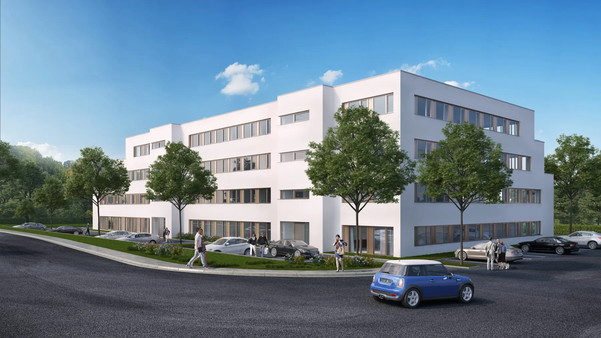
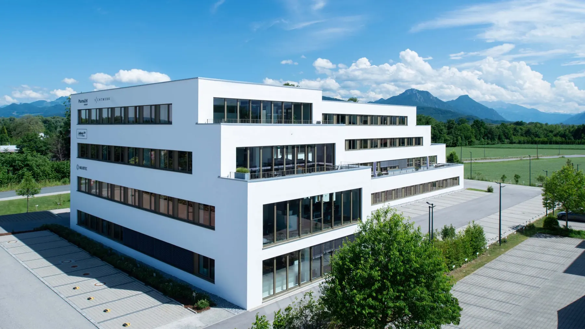
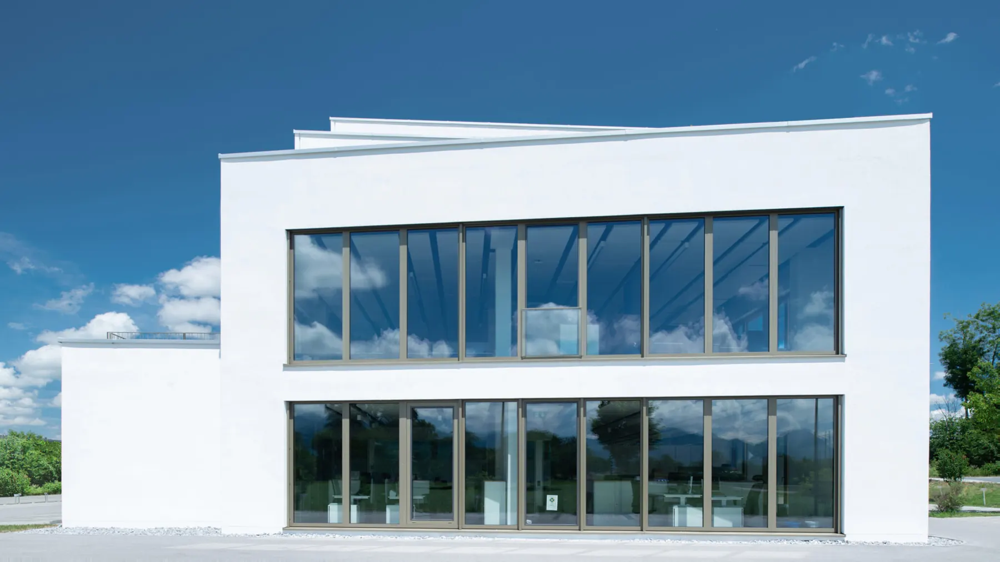

Alpenwerk, Raubling
Ein innovatives Energiekonzept, hochmoderne Büro- und Arbeitswelten, geringe Nebenkosten, coole Mieter und ein perfekter Standort – all das bietet das Alpenwerk am Eingang des Inntals bei Raubling.
Ein innovatives Energiekonzept, hochmoderne Büro- und Arbeitswelten, geringe Nebenkosten, coole Mieter und ein perfekter Standort – all das bietet das Alpenwerk am Eingang des Inntals bei Raubling.
Hochmoderne Büro- und Arbeitswelten, ein innovatives Energiekonzept und einen einzigartigen Alpenblick – all das bietet das Alpenwerk bei Raubling. Ein einzigartiges Energiekonzept sorgt dafür, dass die Bürowelt nur etwa die Hälfte der Energie eines vergleichbaren Projektes benötigt. Neben einer leistungsstarken Wärmedämmung und hochwertigen Fenstern kommen regenerative Energiequellen zum Einsatz. 30 Geothermie-Bohrungen, die 99 Meter in die Tiefe reichen, versorgen die Umkehrwärmepumpe und ermöglichen das Gebäude mit sehr niedrigem Energieaufwand zu kühlen und im Winter zu beheizen. So entsteht ein Niedrigenergiehaus, das neue Maßstäbe setzt. Durch die sommerliche Kühlung wird dem Erdreich die Wärme zurückgegeben, die ihm im Winter für die Heizung entzogen wird. Ein für die Umwelt rundum nachhaltiges Konzept
Projektentwicklung, Planung und Bau aus einer Hand
Competition
Arbeiten in bayerischer Alpenidylle
Completed

Ein zukunftsträchtiges Energiekonzept
Ein einzigartiges Energiekonzept sorgt dafür, dass die Bürowelt nur etwa die Hälfte der Energie eines vergleichbaren Projektes benötigt. Neben einer leistungsstarken Wärmedämmung und hochwertigen Fenstern kommen regenerative Energiequellen zum Einsatz. 30 Geothermie-Bohrungen, die 99 Meter in die Tiefe reichen, versorgen die Umkehrwärmepumpe und ermöglichen das Gebäude mit sehr niedrigem Energieaufwand zu kühlen und im Winter zu beheizen. So entsteht ein Niedrigenergiehaus, das neue Maßstäbe setzt. Durch die sommerliche Kühlung wird dem Erdreich die Wärme zurückgegeben, die ihm im Winter für die Heizung entzogen wird. Ein für die Umwelt rundum nachhaltiges Konzept.
Das Smart Working Konzept unterscheidet zwischen Work Spaces und Team Spaces: Ruhiges Arbeiten in privater Atmosphäre ist genauso möglich wie ein kooperativer Austausch und Kommunikation in öffentlichen Bereichen.
Smart Working zur Effizienzsteigerung am Arbeitsplatz
Ganz dem modernen Stil und der notwendigen Flexibilität in der heutigen Arbeitswelt gerecht zu werden, stehen Unternehmen immer größeren Herausforderungen gegenüber. Hierfür wurde eine attraktive Lösung geschaffen, um angenehmes und produktives Arbeiten zu ermöglichen und gleichzeitig allen Anforderungen gerecht zu werden. Hierbei wurde konsequent das Smart Working Konzept umgesetzt, das das die Effizienz am Arbeitsplatz laut einer wissenschaftlichen Studie des Fraunhofer Instituts nachweislich um bis zu 36 Prozent steigert. Hinter Smart Working steht der Gedanke, ein kreatives und aktivierendes Arbeitsumfeld zu schaffen, damit optimale Leistungen erbracht werden können. Arbeiten ist in der heutigen Zeit mobil geworden und an verschiedenen Orten möglich. Das Smart Working Konzept unterscheidet zwischen Work Spaces und Team Spaces: Ruhiges Arbeiten in privater Atmosphäre ist genauso möglich wie ein kooperativer Austausch und Kommunikation in öffentlichen Bereichen.

Die Berg- und Naturwelt soll auch für die Nutzer des Alpenwerkes zu jeder Zeit erlebbar sein. So wurde für jede Mieteinheit eine Dachterrasse konzipiert, die für das Arbeiten im Freien, Pausen und Firmenevents genutzt werden kann. Hier kann der Arbeitsalltag zusammen mit seinen Kollegen seinen Ausklang finden. Der Mensch als Zentrum der Gemeinschaft wird durch die architektonische Ausführung zusätzlich in den Fokus gesetzt und dadurch Teil einer einzigartigen Arbeitswelt, die inspiriert und begeistert.
auszeichnungen German Design Award 2020
Auftraggeber: Hubert Haupt Immobilien
leistung Projektentwicklung, Planung und Bau aus einer Hand
Besonderheit hochmoderne Büro-/Arbeitswelt, Smart Working Konzept
Wir haben ihr Interesse geweckt? Sie haben Fragen oder wollen einen Termin mit uns vereinbaren? Dann hinterlassen Sie uns bitte eine Nachricht.
Wenn Sie uns eine Nachricht per Kontaktformular senden, so erheben, speichern und verarbeiten wir Ihre Daten nur, soweit dies für die Abwicklung Ihrer Anfragen und für die Korrespondenz mit Ihnen erforderlich ist. Hier finden Sie unsere Datenschutzerklärung.
Hinweis: Leider können wir aufgrund aktueller betrieblicher Umstände derzeit keine Schülerpraktika anbieten. Wir hoffen auf Ihr Verständnis und stehen für zukünftige Möglichkeiten gerne zur Verfügung. Vielen Dank.
Brückner Architekten GmbH Gabriel-Max-Straße 4 81545 München
BRÜCKNERINNEN Interior
REON Realisierung
PROPERTYMAX Maximales Baurecht
TGA Süddeutschland GmbH
Rendeffect GmbH
Wir haben Ihr Interesse geweckt?
Sie haben Fragen oder wollen einen Termin mit uns vereinbaren?